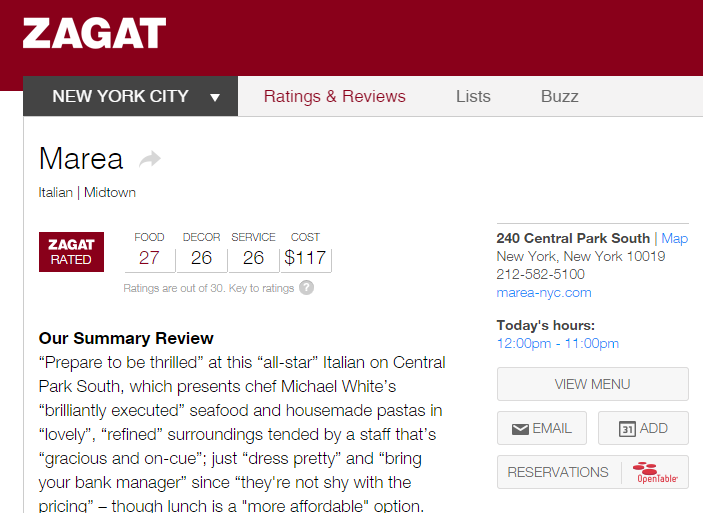
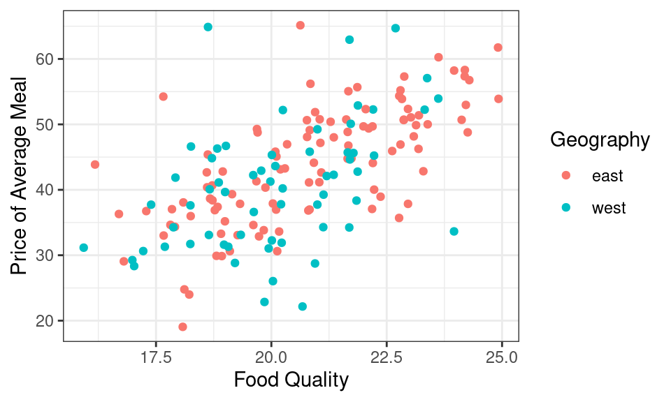
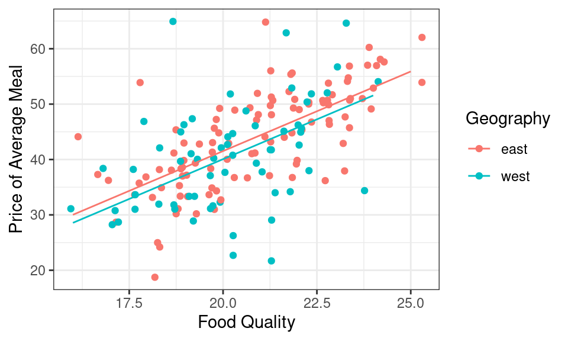

# A tibble: 168 × 6
restaurant price food decor service geo
<chr> <dbl> <dbl> <dbl> <dbl> <chr>
1 Daniella Ristorante 43 22 18 20 west
2 Tello's Ristorante 32 20 19 19 west
3 Biricchino 34 21 13 18 west
4 Bottino 41 20 20 17 west
5 Da Umberto 54 24 19 21 west
6 Le Madri 52 22 22 21 west
7 Le Zie 34 22 16 21 west
8 Pasticcio 34 20 18 21 east
9 Belluno 39 22 19 22 east
10 Cinque Terre 44 21 17 19 east
# ℹ 158 more rowsMultiple Linear Regression
Summarizing linear relationships in high dimensions
In the last lecture we built our first linear model: an equation of a line drawn through the scatter plot.
\[ \hat{y} = 96.2 + -0.89 x \]
While the idea is simple enough, there is a sea of terminology that floats around this method. A linear model is any model that explains the \(y\), often called the response variable or dependent variable, as a linear function of the \(x\), often called the explanatory variable or independent variable. There are many different methods that can be used to decide which line to draw through a scatter plot. The most commonly-used approach is called the method of least squares, a method we’ll look at closely when we turn to prediction. If we think more generally, a linear model fit by least squares is one example of a regression model, which refers to any model (linear or non-linear) used to explain a numerical response variable.
The reason for all of this jargon isn’t purely to infuriate students of statistics. Linear models are one of the most widely used statistical tools; you can find them in use in diverse fields like biology, business, and political science. Each field tends to adapt the tool and the language around them to their specific needs.
A reality of practicing statistics in these field, however, is that most data sets are more complex than the example that we saw in the last notes, where there were only two variables. Most phenomena have many different variables that relate to one another in complex ways. We need a more more powerful tool to help guide us into these higher dimensions. A good starting point is to expand simple linear regression to include more than one explanatory variable!
Multiple Linear Regression
- Multiple Linear Regression
- A method of explaining a continuous numerical \(y\) variable in terms of a linear function of \(p\) explanatory terms, \(x_i\). \[ \hat{y} = b_0 + b_1x_1 + b_2x_2 + \ldots +b_px_p \] Each of the \(b_i\) are called coefficients.
To fit a multiple linear regression model using least squares in R, you can use the lm() function, with each additional explanatory variable separated by a +.
Multiple linear regression is powerful because it has no limit to the number of variables that we can include in the model. While Hans Rosling was able to fit 5 variables into a single graphic, what if we had 10 variables? Multiple linear regression allows us to understand high dimensional linear relationships beyond whats possible using our visual system.
In today’s notes, we’ll discuss two specific examples where a multiple linear regression model might be applicable
A scenario involving two numerical variables and one categorical variable
A scenario involving three numerical variables.
Two numerical, one categorical
The Zagat Guide was for many years the authoritative source of restaurant reviews. Their approach was very different from Yelp!. Zagat’s review of a restaurant was compiled by a professional restaurant reviewer who would visit a restaurant and rate it on a 30 point scale across three categories: food, decor, and service. They would also note the average price of a meal and write up a narrative review.
Here’s an example of a review from an Italian restaurant called Marea in New York City.

In addition to learning about the food scores (27), and getting some helpful tips (“bring your bank manager”), we see they’ve also recorded a few more variables on this restaurant: the phone number and website, their opening hours, and the neighborhood (Midtown).
You might ask:
What is the relationship between the food quality and the price of a meal at Italian restaurant? Are these two variables positively correlated or is the best Italian meal in New York a simple and inexpensive slice of pizza?
To answer these questions, we need more data. The data frame below contains Zagat reviews from 168 Italian restaurants in Manhattan.
Applying the taxonomy of data, we see that for each restaurant we have recorded the price of an average meal, the food, decor, and service scores (all numerical variables) as well as a note regarding geography (a categorical nominal variable). geo captures whether the restaurant is located on the east side or the west side of Manhattan1.
Let’s summarize the relationship between food quality, price, and one categorical variable - geography - using a colored scatter plot.

It looks like if you want a very tasty meal, you’ll have to pay for it. There is a moderately strong, positive, and linear relationship between food quality and price. This plot, however, has a third variable in it: geography. The restaurants from the east and west sides are fairly well mixed, but to my eye the points on the west side might be a tad bit lower on price than the points from the east side. I could numerically summarize the relationship between these three variables by hand-drawing two lines, one for each neighborhood.

For a more systematic approach for drawing lines through the center of scatter plots, we need to return to the method of least squares, which is done in R using lm(). In this linear model, we wish to explain the \(y\) variable as a function of two explanatory variables, food and geo, both found in the zagat data frame. We can express that relationship using the formula notation.
Call:
lm(formula = price ~ food + geo, data = zagat)
Coefficients:
(Intercept) food geowest
-15.970 2.875 -1.459 It worked . . . or did it? If extend our reasoning from the last notes, we should write this model as
\[\widehat{price} = -15.97 + 2.87 \times food - 1.45 \times geo\]
What does it mean to put a categorical variable, geo, into a linear model? And how do three three numbers translate into the two lines shown above?
Indicator variables
When working with linear models like the one above, the value of the explanatory variable, \(geowest\), is multiplied by a slope, 1.45. According to the Taxonomy of Data, arithmetic functions like multiplication are only defined for numerical variables. While that would seem to rule out categorical variables for use as explanatory variables, statisticians have come up with a clever work-around: the dummy variable.
- Dummy Variable
- A variable that is 1 if an observation takes a particular level of a categorical variable and 0 otherwise. A categorical variable with \(k\) levels can be encoded using \(k-1\) dummuy variables.
The categorical variable geo can be converted into an dummy variable by shifting the question from “Which side of Manhattan are you on?” to “Are you on the west side of Manhattan?” This is a mutate step.
# A tibble: 168 × 4
food price geo geowest
<dbl> <dbl> <chr> <lgl>
1 22 43 west TRUE
2 20 32 west TRUE
3 21 34 west TRUE
4 20 41 west TRUE
5 24 54 west TRUE
6 22 52 west TRUE
7 22 34 west TRUE
8 20 34 east FALSE
9 22 39 east FALSE
10 21 44 east FALSE
# ℹ 158 more rowsThe new dummy variable geowest is a logical variable, so it has a dual representation as TRUE/FALSE as well as 1/0. Previously, this allowed us to do Boolean algebra. Here, it allows us to include a dummy variable in a linear model.
While you can create dummy variables by hand using mutate, in practice, you will not need to do this. That’s because they are created automatically whenever you put a categorical variable into lm(). Let’s revisit the linear model that we fit above with geowest in the place of geo.
\[\widehat{price} = -15.97 + 2.87 \times food - 1.45 \times geowest\]
To understand the geometry of this model, let’s focus on what the fitted values will be for any restaurant that is on the west side. For those restaurants, the geowest dummy variable will take a value of 1, so if we plug that in and rearrange,
\[\begin{eqnarray} \widehat{price} &= -15.97 + 2.87 \times food - 1.45 \times 1 \\ &= (-15.97 - 1.45) + 2.87 \times food \\ &= -17.42 + 2.87 \times food \end{eqnarray}\]
That is a familiar sight: that is an equation for a line.
Let’s repeat this process for the restaurants on the east side, where the geowest dummy variable will now take a value of 0.
\[\begin{eqnarray} \widehat{price} &= -15.97 + 2.87 \times food - 1.45 \times 0 \\ &= -15.97 + 2.87 \times food \end{eqnarray}\]
That is also the equation for line.
If you look back and forth between these two equations, you’ll notice that they share the same slope and have different y-intercepts. Geometrically, this means that the output of lm() was describing the equation of two parallel lines:
- one where
geowestis 1 (for restaurants on the west side of town) - one where
geowestis 0 (for restaurants on the east side of town).
That means we can use the output of lm() to replace my hand-drawn lines with ones that arise from the method of least squares.

Reference levels
One question you still might have: Why did R include the dummy variable for the west side of town as opposed to the one for the east side?. The answer lies in the type of variable that geo is recorded as in the zagat dataframe. If you look closely at the initial output, you will see that geo is currently designated chr, which is short for character. geo is indeed a categorical variable with two levels: east and west.
Like in previous settings, R will determine the “order” of levels in a categorical variable registered as a character by way of the alphabet. This means that east will be tagged first and chosen as the reference level: the level of a categorical variable which does not have a dummy variable in the model. If you would like west to be the reference level, then you would need to reorder the levels using factor() inside of a mutate() so that west comes first. This would change the equation that results from then fitting a linear model with lm(), as you can see below!
Call:
lm(formula = price ~ food + geo, data = mutate(zagat, geo = factor(geo,
levels = c("west", "east"))))
Coefficients:
(Intercept) food geoeast
-17.430 2.875 1.459 Now our equation looks a little bit different!
\[\widehat{price} = -17.43 + 2.87 \times food + 1.46 \times geoeast\]
In general, if you include a categorical variable with \(k\) levels in a regression model, there will be \(k-1\) dummy variables (and thus, coefficients) associated with it in the model: one for each level of the variable except the reference level2. Knowing the reference level also helps us interpret dummy variables that are part of the regression equation; we will see this in a moment. For now, let’s move to our second scenario.
Three numerical
While the standard scatter plot allows us to understand the association between two numerical variables like price and food, to understand the relationship between three numerical variables, we will need to build this scatterplot in 3D3.
Take a moment to explore this scatter plot4. Can you find the name of the restaurant with very bad decor but pretty good food and a price to match? (It’s Gennaro.) What about the restaurant that equally bad decor but has rock bottom prices that’s surprising given it’s food quality isn’t actually somewhat respectable? (It’s Lamarca.)
Instead of depicting the relationship between these three variables graphically, let’s do it numerically by fitting a linear model.
Call:
lm(formula = price ~ food + decor, data = zagat)
Coefficients:
(Intercept) food decor
-24.500 1.646 1.882 We can write the corresponding equation of the model as
\[ \widehat{price} = -24.5 + 1.64 \times food + 1.88 \times decor \]
To understand the geometry of this model, we can’t use the trick that we did with dummy variables. decor is a numerical variable just like food, so it takes more values than just 0 and 1.
Indeed this linear model is describing a plane.
If you inspect this plane carefully you’re realize that the tilt of the plane is not quite the same in every dimension. The tilt in the decor dimension is just a little bit steeper than that in the food dimension, a geometric expression of the fact that the coefficient in front of decor, 1.88, is just a bit higher than the coefficient in front of food, 1.64.
Interpreting coefficients
When moving from simple linear regression, with one explanatory variable, to the multiple linear regression, with many, the interpretation of the coefficients becomes trickier but also more insightful.
Three numerical
Mathematically, the coefficient in front of \(food\), 1.64, can be interpreted a few different ways:
It is the difference that we would expect to see in the response variable, \(price\), when two Italian restaurants are separated by a food rating of one and they have the same decor rating.
Controlling for \(decor\), a one point increase in the food rating is associated with a $1.64 increase in the \(price\).
Similarly for interpreting \(decor\): controlling for the quality of the food, a one-point increase in \(decor\) is associated with a $1.88 increase in the \(price\).
Two numerical, one categorical
This conditional interpretation of the coefficients extends to the first setting we looked at, when one variable is numerical and the other is a dummy variable. Here is that model:
\[\widehat{price} = -15.97 + 2.87 \times food - 1.45 \times geowest\]
One might interpret \(food\) like this:
- For two restaurants both on the same side of Manhattan, a one point increase in food score is associated with a $2.87 increase in the price of a meal.
As for \(geowest\):
- For two restaurants with the exact same quality of food, the restaurant on the west side is expected to be $1.45 cheaper than the restaurant on the east side.
We make the comparison to the the east side since this level is the reference level according to the linear model shown. This is a useful bit of insight - it gives a sense of what the premium is of being on the eastside.
It is also visible in the geometry of the model. When we’re looking at restaurants with the same food quality, we’re looking at a vertical slice of the scatter plot. Here the vertical gray line is indicating restaurants where the food quality gets a score of 18. The difference in expected price of meals on the east side and west side is the vertical distance between the red line and the blue line, which is exactly 1.45. We could draw this vertical line anywhere on the graph and the distance between the red line and the blue will still be exactly 1.45.

Summary
We began this unit on Summarizing Data with graphical and numerical summaries of just a single variable: histograms and bar charts, means and standard deviations. In the last set of notes we introduced our first bivariate numerical summaries: the correlation coefficient, and the linear model. In these notes, we introduced multiple linear regression, a method that can numerically describe the linear relationships between an unlimited number of variables. The types of variables that can be included in these models is similarly vast. Numerical variables can be included directly, generalizing the geometry of a line into a plane in a higher dimension. Categorical variables can be included using the trick of creating dummy variables: logical variables that take a value of 1 where a particular condition is true. The interpretation of all of the coefficients that result from a multiple regression is challenging but rewarding: it allows us to answer questions about the relationship between two variables after controlling for the values of other variables.
If this felt like a deep dive into a multiple linear regression, don’t worry. Linear models are one of the most commonly used statistical tools, so we’ll be revisiting them throughout the course: investigating their use in making generalizations, causal claims, and predictions.
Footnotes
Fifth Avenue is the wide north-south street that divides Manhattan into an east side and a west side.↩︎
This is the case for a model including an intercept term; these models will be our focus this semester and are the most rcommonly used.↩︎
While
ggplot2is the best package for static statistical graphics, it does not have any interactive functionality. This plot was made using a system calledplotly, which can be used both in R and Python. Read more about how it works at https://plotly.com/r/.↩︎This is a screenshot from an interactive 3D scatter plot. We’ll see the interactive plot in class tomorrow.↩︎